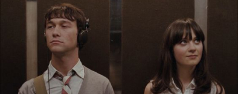
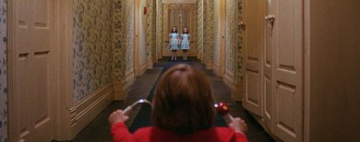

Зачем мы смотрим кино?
Вряд ли можно найти человека, который бы не любил проводить свой досуг за просмотром интересного фильма или сериала.
Просмотр фильма - это своего рода расслабление для мозга, поскольку он переключается на другую волну и отдыхает от обилия мыслей, которые досаждали ему
Так почему же люди смотрят кино?
Удовольствие?
Для чего же еще существует кино, если не для развлечения? Однако удовольствие можно получать разными способами.
Люди очень разные. Их вкусы тоже разные. Каждый сформирован под влиянием тысячи факторов, в том числе и от настроения этого конкретного дня. Перед тем как выбрать фильм, стоит подумыть
Какого рода эмоцию я хочу испытать?
Сделать выбор поможет система жанров.
Она для того и была сформулирована человечеством, чтобы ожидания зрителя не были обмануты. Жанр не может гарантировать удовольствия. Но он указывает на то, какого рода удовольствие вы могли бы испытать на этом конкретном фильме.
-
Комедии дают возможность посмеяться
-

Мелодрамы позволяют зрителю проявить свою чувствительность
-
Боевики позволяют испытать возбуждение
-

Хорроры, они же фильмы ужасов, пугают, причем иногда делают это очень эффектно и убедительно.
-
Триллеры — остросюжетные фильмы — заставляют зрителя нервничать и переживать
-
Фэнтези и фантастика уводят зрителя в параллельные вымышленные миры
Любопытство?
Довольно часто нас интересует мир, в котором мы живем, и особенно его незнакомые грани. Кино во все времена использовало в качестве источников для вдохновения истории реальных людей, события и окружение в целом.
Просмотр фильмов и сериалов позволяет увидеть целый мир, который безграничен и бесконечен. Словно путешествие через экран. Это отличная возможность расширить кругозор, вникнуть в чужие культуры, почерпнуть что-то важное для себя. Помимо путешествий по стране, мы словно используем машину времени, когда окунаемся в разные исторические эпохи и изучаем прошлое, что дает лучшее понимание современного времени. Также мы рассматриваем гипотетические миры и фантастическое будущее через призму вероятностей
Терапия?
Лондонский психотерапевт Берни Вудер разработал оригинальную методику для лечения различных эмоциональных проблем - он рекомендует своим пациентам смотреть художественные фильмы
На глубинном уровне кинотерапия предполагает, что люди должны обсуждать, что означают для них
сюжет, музыка фильма или даже выражение лица героев, когда они смотрят друг на друга.
Однако иногда просмотр фильма можно просто прописывать в терапевтических целях при эмоциональных
проблемах.
Берни Вудер
Кинотерапия - это форма психотерапии, которая использует просмотр фильмов как инструмент для обработки эмоций, стимулирования мыслительных процессов и достижения психологического благополучия. Она основана на идее, что фильмы могут стать мощным источником для самопознания, эмоциональной регуляции и личностного роста.
Принципы кинотерапии Берни Вудера
Идентификация с героями: Зритель идентифицирует себя с героями фильма, часто выбирая тех персонажей, которые имеют схожие черты характера, опыт или проблемы
Проекция и сублимация: Просмотр фильмов позволяет зрителю проецировать свои собственные чувства, мысли и опыт на героев, а затем сублимировать эти эмоции в конструктивные действия и решения
Интерпретация сюжета: Важным аспектом кинотерапии является анализ сюжета фильма и выявление его скрытого смысла, символики и метафор. Это помогает зрителю понять себя лучше, осознать свои внутренние конфликты и найти способы их решения.
Эмоциональное высвобождение: Просмотр фильмов может стать способом выражения и освобождения эмоций, которые были подавлены или недооценены ранее. Это позволяет зрителю обрести эмоциональную разрядку и чувство облегчения.
Кинотерапия представляет собой уникальный и мощный метод психотерапии, который может помочь людям обрести внутреннее равновесие, гармонию и благополучие через глубокое исследование себя и мира вокруг.
Кинолента
Для самоопределения и поиска смысла жизни
Исходный код
(Source Code)
2011Дункан Джонс
Этот фильм исследует тему времени, реальности и смысла жизни через главного героя, который попадает в циклический мир виртуальной реальности, пытаясь понять свою роль и смысл существования.
Матрица
(The Matrix)
1999Луна и Лилли Вачковски
Научно-фантастический боевик исследует тему реальности, иллюзий и смысла жизни через приключения главного героя, который осознает, что его мир - всего лишь иллюзия, и стремится к освобождению от нее
Храбрая сердцем
(Brave)
2012Марк Эндрюс, Бренда Чепмен
Анимационный фильм рассказывает историю о молодой принцессе, которая борется за свою судьбу и истинное самоопределение, отказываясь от традиционных ролей и идя своим путем.
Для отношений и семейной динамики
Свадебный переполох
(Father ot the Bride)
1991Чарльз Шейкер
Этот фильм рассказывает о сложностях семейных отношений через приключения отца, который сталкивается с проблемами своей дочери и его жениха.
Митчелы против машин
(The Mitchels vs the Machines)
2021Майк Рианлы и др.
Этот анимационный фильм исследует тему семейных отношений через приключения семьи, которая сталкивается с технологическим апокалипсисом и должна объединиться, чтобы спасти мир
Как приручить дракона
(How to train a Dragon)
2010Крис Сандерс, Дин ДеБлуа
Этот анимационный фильм рассказывает о дружбе между подростком и драконом, которые вместе преодолевают препятствия и находят понимание и взаимную любовь
Для стресса и травм
Бегущий по лезвию
(Blade Runner)
1982Ридли Скотт
Этот фильм исследует тему стресса и травм через главного героя, который сталкивается с моральными и эмоциональными вызовами в мрачном мире будущего
Отряд самоубийц
(Suicide Squad)
2016Дэвид Эйр
Этот фильм рассказывает стрессе и травмах через приключения команды отверженных, которые вынуждены бороться за свою жизнь и выживание в экстремальных условиях
В поисках Немо
(Finding Nemo)
2003Дункан Джонс
Этот фильм рассказывает о приключениях отца, который идет на поиски своего сына, потерявшегося в океане, что подчеркивает смелость и решимость в преодолении трудностей.
Для самооценки и личностного роста
Ла ла ленд
(La La Land)
2016Дэмьен Шазелл
Этот музыкальный романс исследует тему мечтаний и личностного роста через приключения молодых артистов, стремящихся к успеху в Голливуде
Джокер
(Joker)
2019Тодд Филлипс
Психологический триллер исследует тему самооценки и личностного роста через приключения главного героя, который сталкивается с социальным отвержением и психическими травмами.
Игры разума
(A Beautiful Mind)
2001Рон Ховард
Этот биографический драматический фильм рассказывает о жизни математика, страдающего от шизофрении, который находит смысл и цель жизни через свои научные исследования